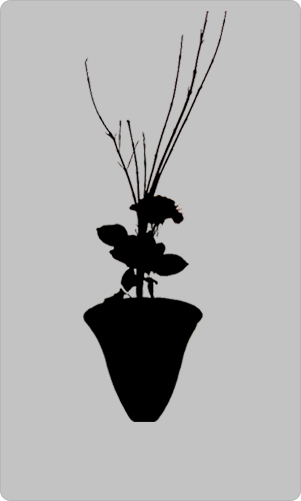

ABOUT
藍 莫雅（Lan Moya）
中国・広西の出身です。文学に興味を持ち、大学には文学部を進学しました。 三年前、日本に留学に来て、修士課程を経て、今は博士後期課程の一年生です。 文学の研究をすればすれほど、自分が学んだ知識を多くの人にシェアすることの難しさをかんじました。 文字だけではなく、デザインの力を通じて人々に文学の魅力を伝わることができればいいなあと思います。
HOBBY
- 
華道
四季折々の草花の姿の美しさを愛でるのが好き。池坊の「中伝」を取ったが、まだまだ勉強する余地がある
-

茶道
去年から稽古を初め、茶会も二回参加したが、茶道はやはり知るほど知れば奥深いと深く感じた。
-
読書
専門は中国文学で、唐宋時代の漢詩を研究している。日本の和歌にも興味を持つが、古文には苦手。
PLACE
中国の南国出身で、季節の移り変わりがあまりない環境に育てられた。 コロナのため、帰郷することが難しいが、故郷の写真を見れば癒やされる。